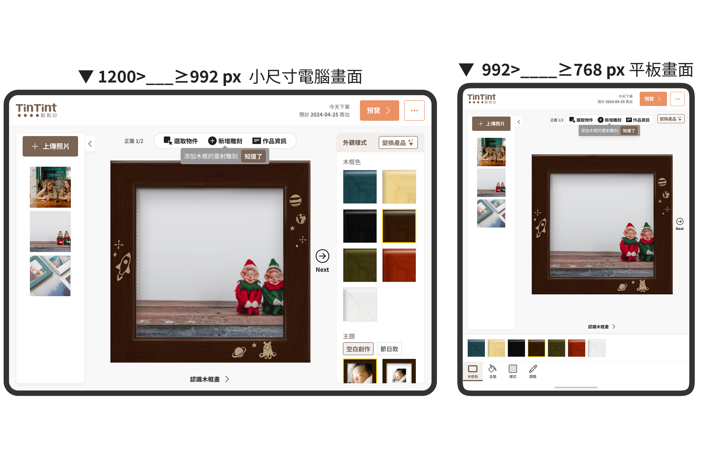
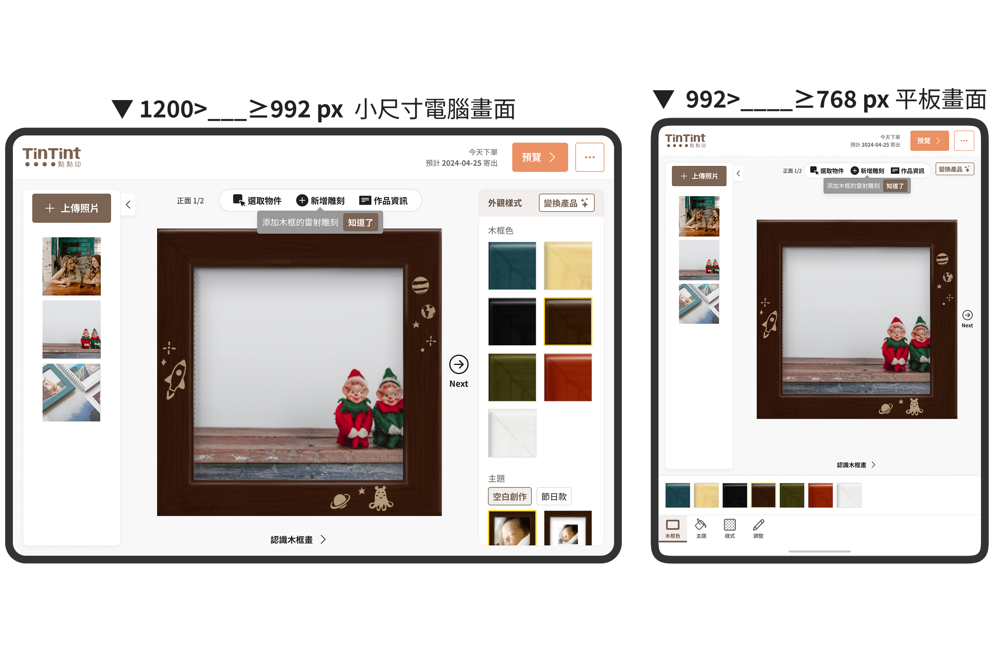

主要操作 CTA 點擊率提升
將「繼續編輯」等關鍵行動按鈕直接置於作品卡片上，使用者能更快識別並執行操作，有效降低思考與點擊成本，進而提升 CTA 點擊率達 45%。
簡化步驟和資訊，操作效率提升
當附加功能收合後，用戶無需跳轉至其他頁面即可完成操作。根據用戶回饋與行為數據顯示，操作步驟減少後，使用流程更為直覺，轉換率提升了 15%，用戶平均完成時間也縮短了 30%。
客服相關問題回報量下降
簡化介面後，用戶更容易理解作品狀態與後續操作，客服關於「作品去哪了」、「如何進入編輯器」的詢問明顯減少。
客服相關問題回報量下降
簡化介面後，用戶更容易理解作品狀態與後續操作，客服關於「作品去哪了」、「如何進入編輯器」的詢問明顯減少。
概述 Overview
Single - 輕量作品編輯器
#B2C #SaaS #POD（客製化印刷服務） #RWD Website
產品服務｜快速製作的產品類型（如卡片、木框畫...）會使用 Single 編輯器；若有進階需求，使用者也能從 Single 進入 Editor2。
Team | TinTint 點點印
Role | 🧑🏻💻 UIUX Designer
Collaborators | UIUX Designer(1)、PM(1)、FE(2)、BE(1)、CS(2)
在優化 Single 編輯器的專案中，我發現使用者常在響應式裝置上卡關，主要是介面缺乏明確的操作引導，讓人難以順利開始編輯，許多用戶因此在初期就放棄。我整合用戶回饋與競品分析，建立 Personas 和 Empathy Map，並與 CS 團隊釐清回報背後的真正需求。多數使用者並非抗拒編輯，而是不知道從哪開始、該怎麼做才對。
根據這些洞察，我調整資訊架構、簡化選項，設計出「任務導向」的分階段流程，讓使用者能專注一件事、一步步完成作品，降低中途離開的可能。 在流程設計與原型測試期間，我與 PM 密切合作，釐清各節點的功能與進入條件。最終新流程成功讓棄單率下降 25%。這次經驗也讓我更有意識地在設計中維持「操作上的明確感」，幫助使用者更有信心完成任務。
設計
流程
Empathize
✦ Empathy Map
✦ Personas
✦ User Story Maps
✦ Interview Method
✦ Competitive Audit
Define
✦ Value Proposition
✦ Information Architecture
Ideate
✦ Story Board
✦ User Flow
Wireframe
✦ Wireframe
✦ Lo-Fi Prototype
✦ Usability Test
UI Design
✦ Visual Design System
✦ UI Kit
Prototype
✦ Mockup
Prototype
✦ Usability Test
✦ QA
痛點與觀察 Pain Point & Task
舊版的問題
🔺操作效率受限於螢幕與滾動
在行動裝置上，因螢幕較小且介面需頻繁上下滑動，使用者難以快速切換功能，增加點擊次數與操作負擔。
🔺關聯操作分散各處
像「新增」、「選物件」、「加雕刻」在上方，照片池與新增按鈕卻藏在下方，導致操作流程斷裂、學習成本高。
🔺預覽體驗不穩定
滾動切換功能時，作品位置容易偏移和抖動，干擾細節調整與即時預覽。
🔺資訊層級不清
樣式、顏色、雕刻等選項未明確區分，容易讓使用者搞不清楚目前編輯狀態。
設計優化重點 Solution
為解決上述問題，我重新規劃操作流程與介面，讓體驗更清晰流暢。
- 統一操作區塊位置：將照片池固定於左側，並整合編輯工具列，減少視線與操作的跳轉。
- 優化照片新增流程：使用者可直接於編輯區上傳與替換照片，流程更簡潔。
- 重整按鈕與工具排列邏輯：依使用場景分類，提升操作直覺性。
- 提升視覺一致性與精緻度：使用低飽和色系、加強層次感（圓角、陰影等），打造更現代的介面風格。
- 調整字體與元件間距：改善閱讀與點擊體驗，提升整體易用性。
資訊架構 Define
先盤點現有功能，統整規格並解決不一致之處，建立規格文件與資訊架構。同時讓團隊成員快速理解產品結構，加速開發決策。
User Flow Ideate
精簡流程並重新梳理編輯體驗
當專案目標明確後，我從使用者角度出發，盤點現有編輯流程中的操作痛點與介面問題，列出需要優化的功能項目，例如：將「儲存」與「進階編輯」收合至 Header 精簡操作視覺，或重新評估「變換產品」功能在 Single 編輯器中的優先順序，以聚焦使用者最常進行的核心操作。

Wireframe
從操作流程到線框圖，逐步落實設計邏輯
針對功能調整，我先重構主要操作流程並繪製使用路徑圖，協助團隊掌握整體邏輯。透過多次討論與修正，逐步收斂為符合情境與技術可行的方案。
完成資訊架構後，我先於平板快速構圖，再以 Figma 製作線框圖，聚焦元件佈局與資訊層級，確認方向後再進入視覺設計階段。
新版｜視覺風格簡約清楚且統一
界面層次更清晰
- [舊版] 選單、按鈕與編輯區塊界線不明，使用者需花時間理解操作與內容間關係。
- [新版] 固定編輯區並統一按鈕樣式，層級更清晰，操作更直覺。
更專注的編輯區域
- [舊版] 編輯內容會隨滾動變動，使用者難以長時間專注於作品。
- [新版] 固定編輯範圍後，使用者視線更集中，不再因滾動而分心。
操作區塊的視覺統一性
- [舊版] 不同的選項區塊間的間距、圖示大小不一致，導致視覺層級不夠統一。
- [新版] 選項區塊的樣式更加一致，提升整體美感與操作流暢度。
更突出的按鈕與操作指引
- [舊版] 按鈕過小、標示不明，使用者需花時間尋找功能。
- [新版] 調整按鈕樣式並收折次要功能讓操作更聚焦，清楚引導使用者完成「預覽」與完稿流程。
配色與視覺焦點更均衡
- [舊版] 顏色對比度較低，某些選單可能容易被忽略。
- [新版] 透過更具對比度的配色，將區塊明顯區分，讓用戶明確知道有三個區塊分別可做哪些操作。
更符合行動裝置使用習慣
- [舊版] 按鈕與選單可能因滾動而偏離操作範圍，導致使用體驗下降。
- [新版] 固定底部導覽列的形式，使用者可以輕鬆用拇指點擊選項，符合行動裝置的使用習慣。
作品編輯區
-整體強化響應式：固定高度範圍
- 明確定義不同段點區間裝置的畫面呈現
- 優化後的設計更加直覺、層次分明，並且加強了視覺焦點與操作便利性，使得使用者在編輯過程中能更專注於作品本身，帶來更流暢的體驗。
 

將上傳照片區移至左側，優化編輯流程與畫面重心
▍依產品特性調整介面結構與操作體驗
針對卡片、木框畫、海報等可快速完成的產品，設計輕量化的 Single 編輯器，支援少步驟、直覺化的編輯流程，並與 Editor2 的進階編輯功能區隔。
新版將上傳照片區移至左側側欄以減少干擾，中央聚焦編輯與預覽，右側整合樣式與設定，讓操作更順暢、畫面更平衡。
Header 結構調整 ： 聚焦編輯任務，簡化導覽選項
[舊版]
編輯畫面沿用官網 Header，因包含行銷與非編輯資訊，容易分散使用者注意力。
[新版]
依據 Single 編輯器 的定位重新設計導覽結構，聚焦在編輯、預覽與購買等主要操作，讓使用流程更集中。同時新增離開提示 Modal，當使用者點擊返回官網時，系統會先確認操作，避免誤離開導致資料遺失，確保編輯過程不中斷。
變換產品：聚焦同系列，降低誤用風險
原本提供完整產品列表供自由切換，但觀察到多數使用者僅在同系列間變換，較少進行跨品類操作（如木框畫換成相片筆記本），且「變換產品」屬於附加、非高頻功能。
因此新版僅保留並收合「同系列產品」選項，讓介面更聚焦、降低誤用，同時保留照片套用至相似產品的彈性。
增加友善的教學 Tooltips：即時引導、降低學習門檻
針對特定產品的部分功能（如 海報 與 木框畫 的「新增雕刻」），我們加入情境式 Tooltips，在使用者初次進入編輯器適時提示，協助理解操作方式，降低學習門檻。
此機制保留彈性，未來新增功能也能沿用，不影響版面配置，提升功能可見性與使用率。
介面工具列優化：提升操作效率，統一互動邏輯
▍頁面功能 Bar 優化：強化使用體驗
- 將功能列移至編輯區上方，操作更直覺。
- 優化體驗，減少滑動與視線移動。
- 功能分區明確，有助快速完成編輯。
▍樣式與操作一致化：文字與照片工具列同步更新
- 統一文字與照片工具列樣式，符合新版設計系統。
- 文字 Modal 支援字體、字級、顏色與對齊設定。
- 無需回外層調整，Modal 內即可完整編輯。
▍功能命名與行為邏輯統一
- 維持一致命名與開啟邏輯，降低使用者認知負擔。將原有不同名稱的設定按鈕（如「編輯作品」、「基本內容」…）統一為「作品資訊」。
- 作品資訊 Modal 中統一可編輯項目為：作品名稱與作品說明。